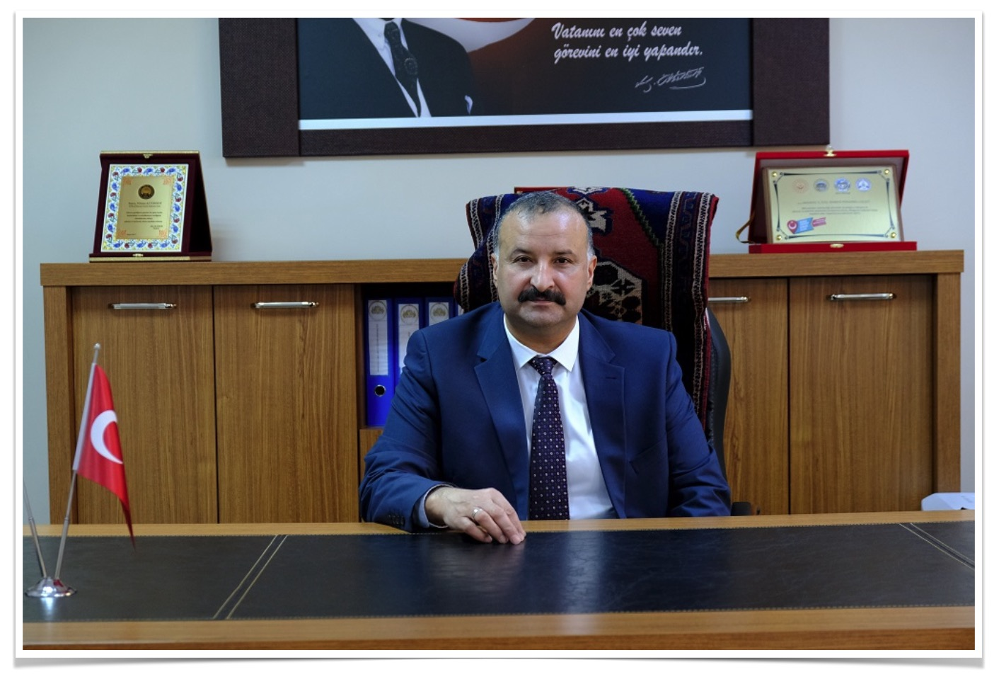
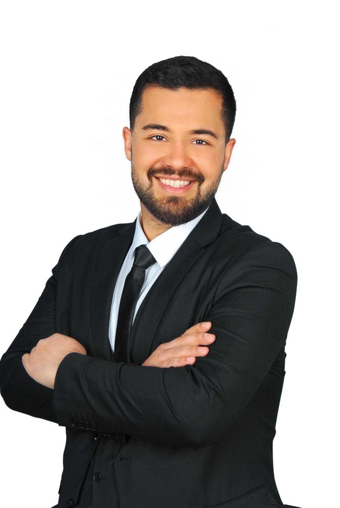

Yönetim Kurulu

Yılmaz Altınsoy
Yönetim Kurulu Başkanı
01.12.1969 tarihinde Aksaray’da doğdu. İlk, orta, lise ve üniversite eğitimini Aksaray’da tamamladı. 1991 yılında Bursa Polis Okulu’ndan mezun oldu ve 1991-1994 yılları arasında Amasya Emniyet Müdürlüğü’nde görev yaptı. 1994 yılında Aksaray Köy Hizmetleri İl Müdürlüğü’ne yatay geçiş yaparak Makine İkmal Şube Müdürlüğü bünyesinde Atölye Mühendisliği, İkmal Mühendisliği ve İşletme Mühendisliği görevlerinde bulundu. 2008 yılında Aksaray Valiliği tarafından Destek Hizmetleri Müdürü olarak atandı. 2012 yılında Aksaray İl Özel İdaresi'nde Genel Sekreter Yardımcısı olarak görevlendirildi. Günümüzde Aksaray’da çeşitli ticari ve sosyal faaliyetlerde aktif olarak yer almaktadır.

Ömer Altınsoy
Yönetim Kurulu Başkan Yardımcısı
20.05.1997 tarihinde Aksaray’da doğdu. İlk, orta, lise eğitimini Aksaray’da tamamladı. Üniversite eğitimini 2019 yılında Nuh Naci Yazgan Üniversitesi Güzel Sanatlar ve Tasarım Fakültesi Mimarlık bölümünden Mimar olarak mezun oldu.Altınsoy Şirketler Grubunun İnşaat , Eğitim ve Petrol sektöründen sorumluluklarına devam etmektedir. Günümüzde Aksaray’da çeşitli ticari ve sosyal faaliyetlerde aktif olarak yer almaktadır.